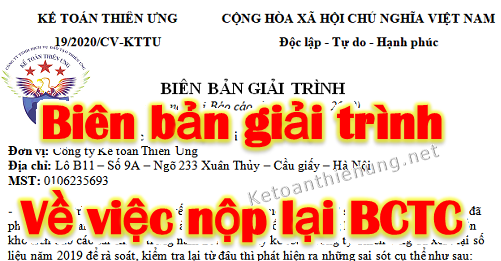

Mẫu công văn xin nộp lại báo cáo tài chính - Biên bản giải trình nộp lại báo cáo tài chính điều chỉnh, bổ sung thay thế Báo cáo tài chính bị sai sót. Kế toán Diệu Tâm xin chia sẻ mẫu Công văn xin nộp lại báo cáo tài chính để các bạn tham khảo.
Theo Công văn 18357/CT-HTr ngày 11/04/2016 của Cục thuế TP. Hà Nội quy định:
"Căn cứ các quy định nêu trên, trường hợp báo cáo tài chính của Công ty Độc giả Lê Thị Huyền có sai sót thì được khai bổ sung. Hồ sơ khai thuế bổ sung được nộp cho cơ quan thuế vào bất cứ ngày làm việc nào, không phụ thuộc vào thời hạn nộp hồ sơ khai thuế của lần tiếp theo, nhưng phải trước khi cơ quan thuế, cơ quan có thẩm quyền công bố quyết định kiểm tra thuế, thanh tra thuế tại trụ sở người nộp thuế.
- Trường hợp, Báo cáo tài chính có sai sót gây ảnh hưởng đến số thuế TNDN phải nộp thì đơn vị làm hồ sơ khai bổ sung (mẫu số 01/KHBS kèm theo thông tư số 156/2013/TT-BTC) bổ sung, điều chỉnh số liệu trên Tờ khai quyết toán thuế TNDN của năm có sai sót (mẫu số 03/TNDN kèm theo thông tư số 156/2013/TT-BTC) kèm theo Báo cáo tài chính đã được bổ sung, sửa đổi.
- Trường hợp, Báo cáo tài chính có sai sót nhưng không ảnh hưởng đến số thuế TNDN phải nộp thì đơn vị được phép khai bổ sung số liệu trên Báo cáo tài chính và nộp lại cho cơ quan thuế, không phải lập Bản giải trình khai bổ sung, điều chỉnh mẫu số 01/KHBS.
Công ty của Độc giả Lê Thị Huyền đã đăng ký kê khai thuế điện tử thì thực hiện việc nộp hồ sơ thuế qua mạng và tuân thủ đúng các quy định của pháp luật về giao dịch điện tử."
-------------------------------------------------------------------------
Như vậy:
- Báo cáo tài chính làm sai DN có thể khai bổ sung để nộp lại (Nhưng phải trước khi có Quyết định của Cơ quan thuế).
Hồ sơ gồm:
- Nếu BCTC sai sót không ảnh hưởng đến thuế TNDN thì gồm:
+ Báo cáo tài chính đã được điều chỉnh, bổ sung
- Nếu BCTC sai sót ảnh hưởng đến thuế TNDN thì gồm:
+ Báo cáo tài chính đã được điều chỉnh, bổ sung
+ Tờ khai Quyết toán thuế TNDN đã được điều chỉnh, bổ sung.
+ Bản giải trình khai bổ sung, điều chỉnh - Mẫu 01/KHBS
Ngoài ra: Các bạn có thể làm 1 Biên bản giải trình về việc làm sai Báo cáo tài chính - Có những Chi cục thuế yêu cầu nộp thêm mẫu này (Nếu chi cục thuế yêu cầu thì nộp, nếu không yêu cầu thì thôi lưu tại DN để sau này giải trình cho nhanh)
- Muốn nộp được qua mạng các bạn phải làm Công văn xin nộp lại BCTC trên Excel sau đó nộp giống như khi nộp Thuyết minh báo cáo tài chính.
Chi tiết xem tại đây nhé: Cách nộp thuyết minh báo cáo tài chính qua mạng
----------------------------------------------------------------------
| KẾ TOÁN DIỆU TÂM | CỘNG HÒA XÃ HỘI CHỦ NGHĨA VIỆT NAM |
| 19/2020/CV-KTTU | Độc lập - Tự do - Hạnh phúc |
BIÊN BẢN GIẢI TRÌNH
(V/v nộp lại Báo cáo tài chính năm 2021)
Kính gửi: Chi cục thuế Quận Cầu giấy.(V/v nộp lại Báo cáo tài chính năm 2021)
Đơn vị: Công ty Tư vấn Minh Phúc
Địa chỉ: Lô B11 – Số 9A – Ngõ 233 Xuân Thủy – Cầu giấy – Hà Nội
MST: 0106235693
- Trong quá trình làm việc, khi kết chuyển số dư cuối năm 2020 sang đầu năm 2021 Cty đã phát hiện ra sai sót giữa số liệu hàng tồn kho trên sổ sách không khớp với số liệu hàng tồn kho trên báo cáo tài chính trong năm 2021, vì vậy kế toán Công ty Diệu Tâm đã xem lại số liệu năm 2021 để rà soát, kiểm tra lại từ đầu thì phát hiện ra những sai sót cụ thể như sau:
Do kế toán nhầm lẫn nên đã nhập số dư tồn kho đầu kỳ trên báo cáo tài chính đã nộp là: 982.000.000 đồng không khớp với số dư đầu kỳ trên bảng nhập xuất tồn của sổ sách. Trên sổ sách số dư đầu kỳ là: 985.000.000 đồng, cụ thể là sai trị giá hàng tồn kho của mặt hàng Điều hòa SAMSUNG 9000PTU. (số dư cuối năm 2020 của Điều hòa SAMSUNG 9000PTU chuyển sang là 156.000.000 nhưng phần mềm đã nhảy sai số thành 165.900.000 đồng), làm ảnh hưởng tới giá vốn của mặt hàng Điều hòa SAMSUNG 9000PTU nói riêng và trị giá vốn hàng bán ra trong năm 2021 nói chung
Do hạch toán sai tài khoản mua Chuột không dây Genius Traveler 6000Z, kế toán đã hạch toán vào tài khoản 156 – hàng hoá, nay điều chỉnh vào tài khoản 6427 – chi phí dịch vụ mua ngoài, làm cho trị giá hàng tồn kho trong kỳ giảm 400.000 đồng và tổng chi phí dịch vụ mua ngoài tăng thêm 400.000 đồng.
- Trên đây là biên bản giải trình của Công ty Diệu Tâm về việc thay thế báo cáo tài chính năm 2021 đã nộp ngày 31 tháng 03 năm 2022 bằng một báo cáo tài chính mới sau khi đã điều chỉnh lại những sai sót trên.
Chúng tôi xin chân thành cảm ơn!
| Hà Nội, ngày 06 tháng 09 năm 2022 | |
| Nơi Nhận: | Người đại diện theo pháp luật |
| - Như trên | (Ký, họ tên và đóng dấu) |
| - Văn Phòng |
----------------------------------------------------------------------------------------------
Tải mẫu Công văn xin nộp lại Báo cáo tài chính tại đây:
Nếu bạn không tải về được thì có thể làm theo cách sau:
Bước 1: Để lại mail ở phần bình luận bên dưới
Bước 2: Gửi yêu cầu vào mail: ketoandieutam@gmail.com (Tiêu đề ghi rõ Tài liệu muốn tải)
--------------------------------------------------------------------------
--------------------------------------------------------------------------------------------------------------
Kế toán Diệu Tâm xin chúc các bạn thành công!
